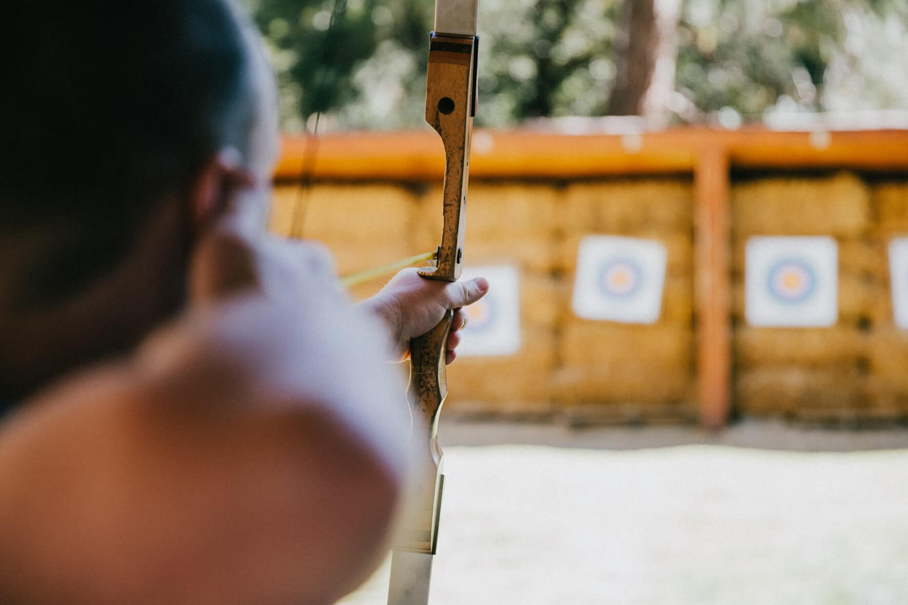

Customer Comments
‘We had a great time and loved all the different activities that we did’ − 8th Gourock Guides
‘The Scouts loved every second of it, especially the powerboating’ − Martin Bainbridge, Scout Leader
‘I would definitely come back’ − Kelly, aged 9
Thank you to all the staff who worked so hard, in awful weather, to make sure that all the pupils had an amazing experience’ − Mrs Kahn, Hillend Primary School
‘Five stars, it was great’ − Joe, aged 14
‘I was really scared about the abseiling but the instructor Mike was really encouraging and helped me do it, thanks Mike’ − Sophie, aged 10
‘The archery was brilliant, but not as good as axe throwing, I never thought we’d be allowed to do that! I got one of my axes right in the middle of the target’ − Scott, aged 13
‘The kids had a ball and didn’t want to leave’ − Mr Evans, PE teacher
land based activities exempleArchery
Are you the next Robin Hood? Learn to hold a bow and fire an arrow and take part in fast and fun shootout competitions. Max group size 6. Ages 6+
Hillwalking
From short walks around the site to Munro-bagging expeditions, Lochquarry has it all! Walks can be tailored to suit any age or experience of groups and can last from one hour to all day adventures. Max group size 12. Ages 6+